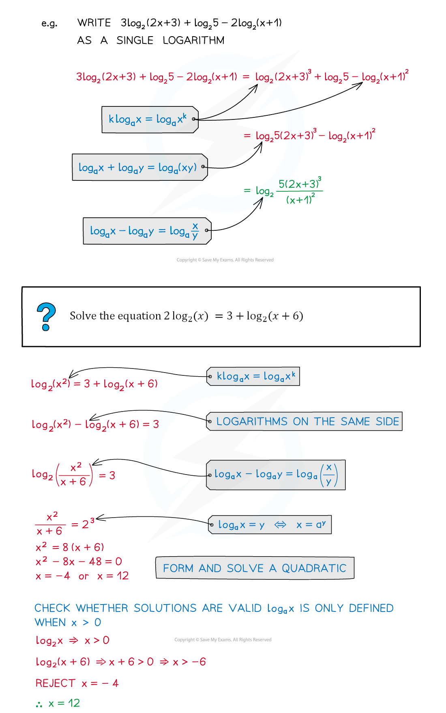
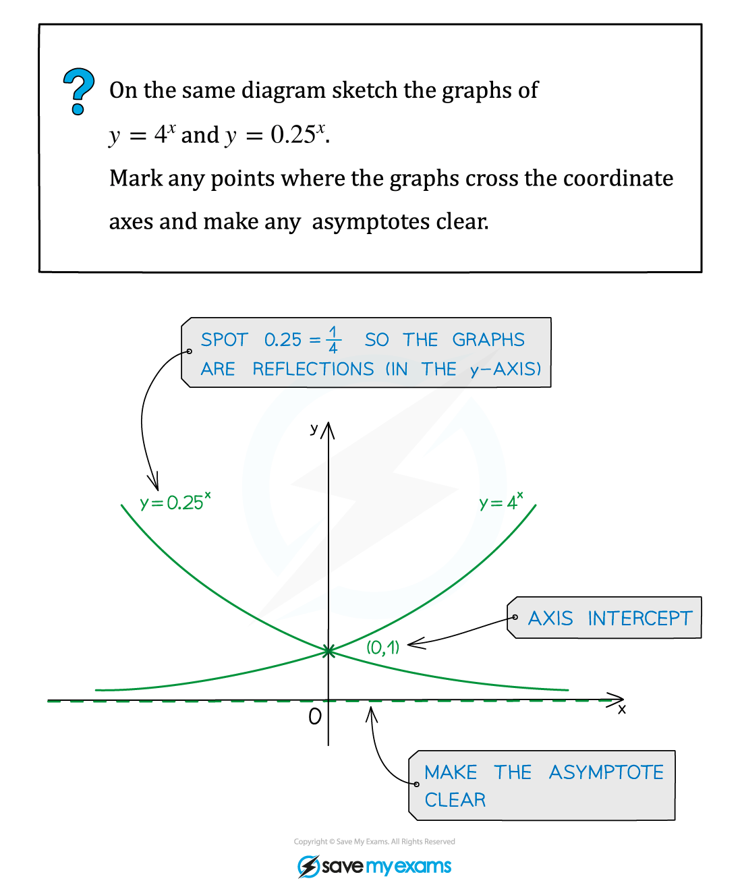
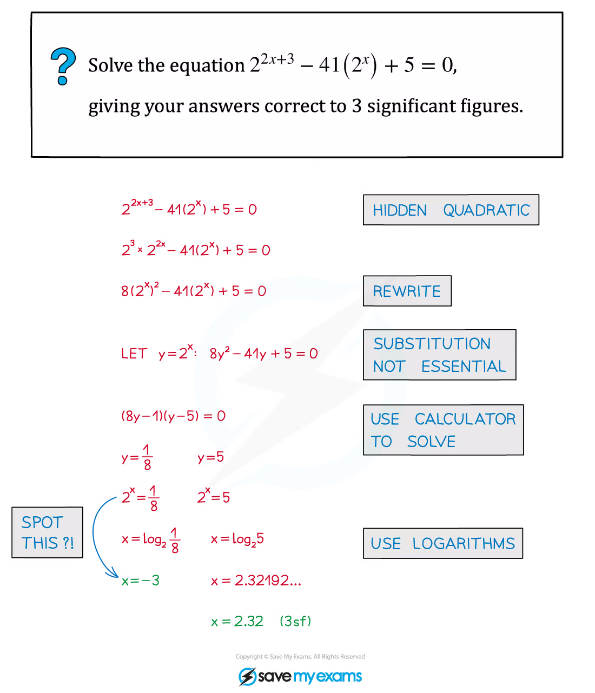
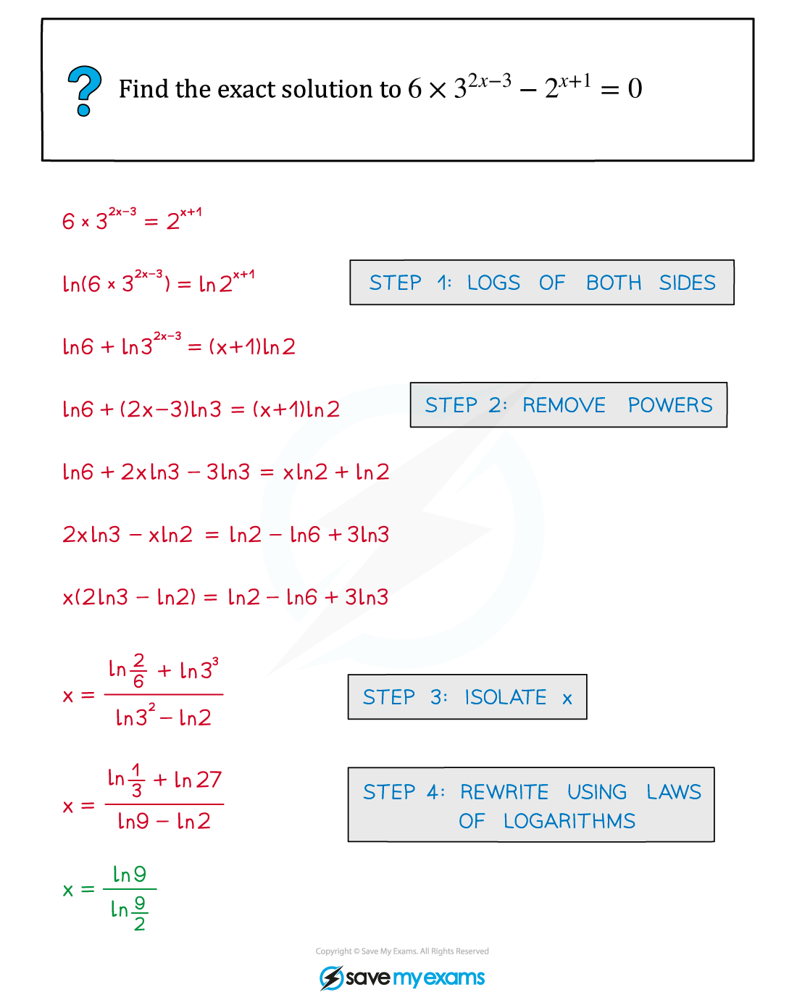
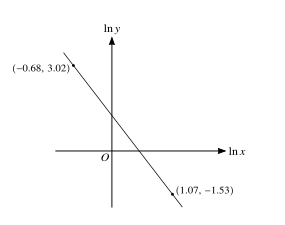

2.2 Logarithmic and exponential functions
Log laws · exponential equations · linearisation
本页依据 9709 Mathematics 2026–2027 syllabus 2.2：使用 laws of logarithms；理解 e^x 与 \ln x 的 inverse relationship 和图像；用 logarithms 解指数 equations；把 given relationship transform to linear form，并由 gradient/intercept 求未知常数。
工作区没有独立的 Paper 2 note PDF，因此 worked examples 使用同一套 Logarithmic and exponential note PDF 中的原始图片；真题全部来自本地 Paper 2 原始 PDF，数量不足时不补造题目。
1. Core knowledge
Logarithm laws and domain
\log_a(xy)=\log_a x+\log_a y, \quad \log_a\left(\frac{x}{y}\right)=\log_a x-\log_a y, \quad \log_a(x^n)=n\log_a x.
每个 logarithm 的 argument 必须为正；解完方程后要检查原式定义域。
Worked example · shared Logarithmic and exponential note p.26

Exponential equations and linearisation
若 a^{f(x)}=b，则
f(x)\ln a=\ln b.
若 y=kx^n，取 logarithms 得
\ln y=\ln k+n\ln x.
所以在 graph of \ln y against \ln x 中，gradient 是 n，intercept 是 \ln k。
Worked example · shared Logarithmic and exponential note p.5

Worked example · shared Logarithmic and exponential note p.10

Worked example · shared Logarithmic and exponential note p.31

Worked example · shared Logarithmic and exponential note p.53

Definitions, graphs and change of base
对 a>0 且 a\ne1，
a^y=x\Longleftrightarrow y=\log_a x,
所以 logarithm 的 argument 必须满足 x>0。常用换底公式为
\log_a x=\frac{\ln x}{\ln a}.
y=a^x 的 graph 经过 (0,1)，horizontal asymptote 是 y=0；当 a>1 时 increasing，当 0<a<1 时 decreasing。y=\ln x 是它在交换 x,y 后的 inverse graph，vertical asymptote 是 x=0。
Solving exponential and logarithmic equations
优先把两边写成相同 base；若不能，取 natural logarithm。使用 logarithm laws 合并前，必须确认每一个 argument 都是 positive。若令 u=a^x 或 u=e^x 把方程化成 quadratic，解出 u 后要保留 u>0 的限制，再回代求 x。
含有 ln(f(x)) 的方程最后要检查 f(x)>0；平方、指数化或乘以 variable 产生的 extraneous roots 必须代回原方程。
Linearised models
若模型为 y=ka^{x}，则
\ln y=\ln k+x\ln a.
在 graph of \ln y against x 中，gradient 是 \ln a、intercept 是 \ln k；若模型为 y=kx^n，在 graph of \ln y against \ln x 中 gradient 是 n、intercept 是 \ln k。读出 intercept 后要取 exponential 才能得到 k。
2. Verified Paper 2 past-paper questions
以下题目均已在本地 Paper 2 原始 PDF 及对应 mark scheme 中核对；题干只把 PDF 排版规范为 LaTeX，没有改写或编造题目。
Question 1 · 9709/21/M/J/20 Q1
Solve the equation
\ln(x+1)-\ln x=2\ln2.
[3]
Show detailed mark scheme answer
The domain is x>0. Combine the logarithms:
\ln\left(\frac{x+1}{x}\right)=\ln4 \Longrightarrow \frac{x+1}{x}=4.
Thus x+1=4x, so
\boxed{x=\frac13}.
This satisfies x>0.PastPaper/2020/2020/9709-s20-qp-21.pdf, Q1, and matching mark scheme.
Question 2 · 9709/22/M/J/20 Q1
Given that
2^y=9^{3x},
use logarithms to show that y=kx and find the value of k correct to 3 significant figures. [3]
Show detailed mark scheme answer
Take logarithms:
y\ln2=3x\ln9.
Therefore
y=\frac{3\ln9}{\ln2}x=kx,
and
\boxed{k=\frac{3\ln9}{\ln2}\approx9.51}.PastPaper/2020/2020/9709-s20-qp-22.pdf, Q1, and matching mark scheme.
Question 3 · 9709/22/M/J/20 Q4
The variables x and y satisfy the equation y=Ax^{-2p}, where A and p are constants. The graph of \ln y against \ln x is a straight line passing through the points (-0.68,3.02) and (1.07,-1.53), as shown in the diagram.
Find the values of A and p. [5]

Show detailed mark scheme answer
Taking logarithms gives
\ln y=\ln A-2p\ln x.
The gradient is
m=\frac{-1.53-3.02}{1.07-(-0.68)}=-\frac{4.55}{1.75}=-2.6.
Thus -2p=-2.6, so p=1.3. Using (-0.68,3.02),
3.02=\ln A+(-2.6)(-0.68)=\ln A+1.768.
Hence \ln A=1.252 and
\boxed{p=1.30,\qquad A=e^{1.252}\approx3.50}.PastPaper/2020/2020/9709-s20-qp-22.pdf, Q4, and matching mark scheme.
Question 4 · 9709/22/F/M/21 Q5(a)
Given that
2\ln(x+1)+\ln x=\ln(x+9),
show that
x=\frac9{x+2}.
[3]
Show detailed mark scheme answer
The logarithm arguments require x>0. Combine the left-hand side:
\ln\left(x(x+1)^2\right)=\ln(x+9) \Longrightarrow x(x+1)^2=x+9.
Expanding and cancelling x gives
x^3+2x^2=9 \Longrightarrow x^2(x+2)=9.
Since x>0, divide by x^2:
\boxed{x=\frac9{x+2}}.PastPaper/2021/2021/9709_m21_qp_22.pdf, Q5(a), and matching mark scheme.
Question 5 · 9709/22/M/J/21 Q1(a–b)
- Solve the equation
\ln(2+x)-\ln x=2\ln3.
- Hence solve the equation
\ln(2+\cot y)-\ln(\cot y)=2\ln3
for 0<y<\frac12\pi. Give your answer correct to 4 significant figures. [3+2]
Show detailed mark scheme answer
- The domain is x>0 and
\frac{x+2}{x}=9 \Longrightarrow 2=8x \Longrightarrow \boxed{x=\frac14}.
- Replace x by \cot y:
\frac{\cot y+2}{\cot y}=9 \Longrightarrow \cot y=\frac14.
In the specified interval,
\boxed{y=\tan^{-1}4\approx1.326\text{ radians}}.PastPaper/2021/2021/9709_s21_qp_22.pdf, Q1(a–b), and matching mark scheme.
Question 6 · 9709/21/O/N/20 Q1
Given that
\ln(2x+1)-\ln(x-3)=2,
find x in terms of e. [4]
Show detailed mark scheme answer
The domain is x>3. Combine and exponentiate:
\frac{2x+1}{x-3}=e^2.
Therefore
2x+1=e^2x-3e^2 \Longrightarrow x(e^2-2)=1+3e^2.
Hence
\boxed{x=\frac{1+3e^2}{e^2-2}}.PastPaper/2020/2020/9709_w20_qp_21.pdf, Q1, and matching mark scheme.
Question 7 · 9709/22/O/N/20 Q2
Given that
\frac{2^{3x+2}+8}{2^{3x}-7}=5,
find the value of 2^{3x} and hence, using logarithms, find the value of x correct to 4 significant figures. [5]
Show detailed mark scheme answer
Let t=2^{3x}. Then
\frac{4t+8}{t-7}=5 \Longrightarrow 4t+8=5t-35 \Longrightarrow t=43.
Thus
2^{3x}=43 \Longrightarrow x=\frac{\ln43}{3\ln2} \approx\boxed{1.808}\quad\text{(4 s.f.)}.PastPaper/2020/2020/9709_w20_qp_22.pdf, Q2, and matching mark scheme.
Question 8 · 9709/21/O/N/22 Q2
Use logarithms to solve the equation
14e^{-2x}=5^{x+1},
giving your answer correct to 3 significant figures. [4]
Show detailed mark scheme answer
Taking natural logarithms,
\ln14-2x=(x+1)\ln5.
Therefore
x(2+\ln5)=\ln14-\ln5=\ln\frac{14}{5},
so
x=\frac{\ln(14/5)}{2+\ln5}\approx\boxed{0.285}.PastPaper/2022/2022/9709_w22_qp_21.pdf, Q2, and matching mark scheme.
Question 9 · 9709/22/M/J/24 Q2
Use logarithms to solve the equation
6^{2x-1}=5e^{3x+2}.
Give your answer correct to 4 significant figures. [4]
Show detailed mark scheme answer
Take natural logarithms:
(2x-1)\ln6=\ln5+3x+2.
Rearrange as a linear equation in x:
x(2\ln6-3)=\ln5+\ln6+2.
Therefore
x=\frac{\ln5+\ln6+2}{2\ln6-3}=9.256250\ldots,
and hence
\boxed{x=9.256}\qquad\text{(4 s.f.)}.PastPaper/2024/2024/qp-202406-mathematics-p22.pdf, Q2, and matching mark scheme.
Question 10 · 9709/21/O/N/24 Q1(a–b)
The variables x and y satisfy the equation
a^{2y}=e^{3x+k},
where a and k are constants. The graph of y against x is a straight line.
Use logarithms to show that the gradient of the straight line is \dfrac{3}{2\ln a}.
Given that the straight line passes through the points (0.4,0.95) and (3.3,3.80), find the values of a and k. [1+4]
Show detailed mark scheme answer
- Take logarithms:
2y\ln a=3x+k \quad\Longrightarrow\quad y=\frac{3}{2\ln a}x+\frac{k}{2\ln a}.
Therefore the gradient is
\boxed{\frac{3}{2\ln a}}.
- The gradient from the two points is
m=\frac{3.80-0.95}{3.3-0.4}=\frac{2.85}{2.9}.
Equating this to the result in part (a),
\frac3{2\ln a}=\frac{2.85}{2.9} \quad\Longrightarrow\quad \ln a=\frac{29}{19}.
Thus a=e^{29/19}=4.60119\ldots\approx4.60. Using (0.4,0.95),
0.95=\frac{2.85}{2.9}(0.4)+\frac{k}{2\ln a},
which gives k=1.70. Hence
\boxed{a=4.60,\qquad k=1.70}.PastPaper/2024/2024/qp-202410-mathematics-p21.pdf, Q1(a–b), and matching mark scheme.
Question 11 · 9709/21/O/N/21 Q4(a–b)
The curve with equation
y=xe^{2x}+5e^{-x}
has a minimum point M.
- Show that the x-coordinate of M satisfies the equation
x=\frac13\ln5-\frac13\ln(1+2x).
[5]
- Use an iterative formula, based on the equation in part (a), to find the x-coordinate of M correct to 3 significant figures. Use an initial value of 0.35 and give the result of each iteration to 5 significant figures. [3]
Show detailed mark scheme answer
At a stationary point,
\frac{dy}{dx}=e^{2x}(1+2x)-5e^{-x}=0.
Hence
e^{3x}(1+2x)=5.
Taking logarithms,
3x+\ln(1+2x)=\ln5,
which rearranges to
\boxed{x=\frac13\ln5-\frac13\ln(1+2x)}.
- Use
x_{n+1}=\frac13\ln5-\frac13\ln(1+2x_n), \qquad x_1=0.35.
The iterations are
\begin{array}{c|c} n&x_n\\\hline 1&0.35000\\ 2&0.28579\\ 3&0.29635\\ 4&0.29455\\ 5&0.29485\\ 6&0.29480 \end{array}
Hence the required coordinate is
\boxed{x=0.295}\qquad\text{(3 s.f.)}.PastPaper/2021/2021/9709_w21_qp_21.pdf, Q4(a–b), and matching mark scheme.
Exam checklist
- 先写 logarithm 的 domain，再合并 logarithms。
- 指数方程取 logarithm 后，要把未知数的项完整收集。
- Linearisation 中 gradient 对应指数，intercept 对应常数的 logarithm。
- 解完后代回原式，排除 logarithm argument 非正的解。